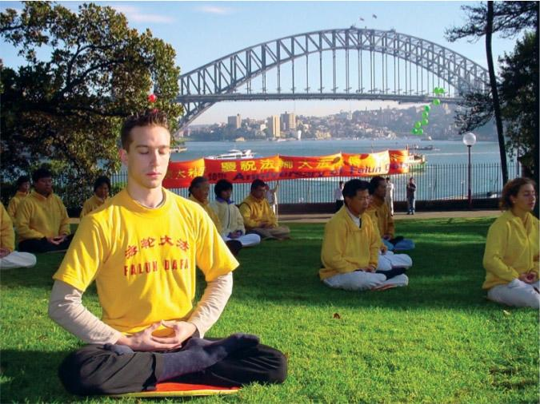
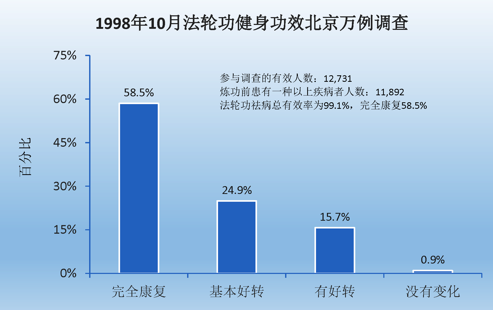
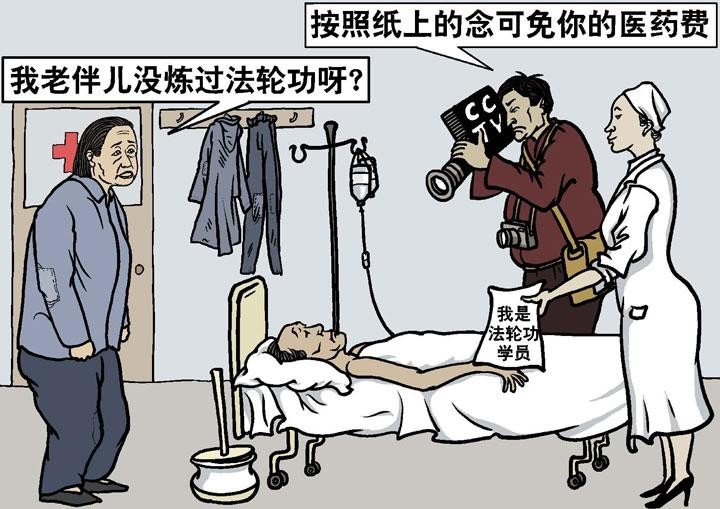
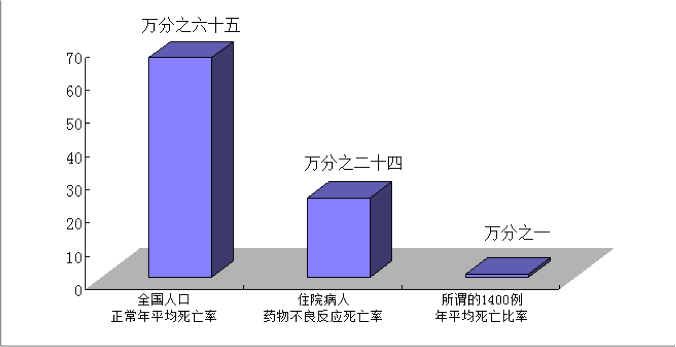
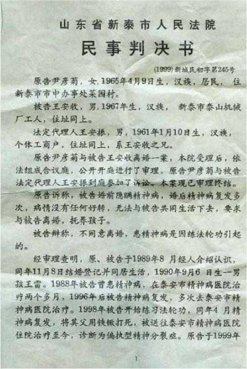
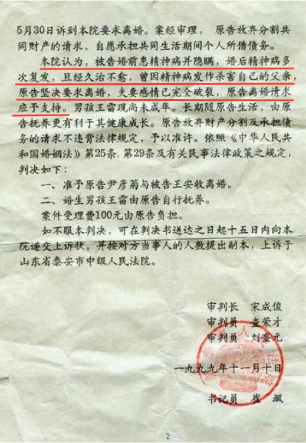

中共罗织的“1400例”杀人、自杀、死亡的案例中，有的案例是把精神病患者病发时的意外事故栽赃为法轮功学员所为，有的案例是以减刑为条件唆使杀人者冒充法轮功学员，有的案例是以报销医药费为诱饵让危重病人冒充法轮功学员，还有的案例是把普通人的正常病逝说成是炼法轮功造成的。所有这些案例都是中共对法轮功的栽赃嫁祸。
这些谎言宣传，不仅成为中共煽动仇恨迫害法轮功学员的借口，而且使很多大陆民众失去了受益于法轮功的机缘。
因害怕谎言被揭穿，中共江泽民集团烧毁法轮功的书籍，关押讲真相的大陆法轮功学员，封锁海外明慧网等报道真相的网站。但是中共的谎言无法阻挡真相的传播。
法轮功祛病健身效果
法轮功是李洪志先生于一九九二年五月传出的一种佛家上乘修炼大法，因为其教人修心向善和神奇的祛病健身功效迅速传遍中国，并传播到海外，修炼人数迅速增长。一九九八年国家体育总局组织北京、武汉、大连及广东省的医学专家，对近三万五千名法轮功学员做了五次医学调查，证明了法轮功祛病健身有效率高于百分之九十八。
“1400例”栽赃术之一：利用精神病人栽赃
李洪志先生从一九九二年传法开始就明确指出，精神病人不能修炼法轮功。在一九九六年的《悉尼法会讲法》中又指出：“精神病人，他自己意识是不清的，我们是不能度的。”而且法轮功教人向善，明确禁止杀生和自杀。“1400例”中有许多是精神病患者而决非法轮功学员。中共江泽民集团搜罗了许多精神病患者病发时杀人或自杀的意外事故，栽赃嫁祸于法轮功。
“1400例”栽赃术之二：唆使杀人犯栽赃
中共江氏集团迫害法轮功，是作为政治任务下达到全国各级官员的。许多地方不法官员为了邀功请赏，编造假新闻栽赃法轮功，公安人员以减免刑罚为条件，唆使杀人犯谎称自己是炼法轮功的，栽赃法轮功。
“1400例”栽赃术之三：收买危重病人栽赃
中共为了诋毁法轮功，还利用医院收买危重、绝症病人，承诺减免医药费，让他们谎称自己是炼法轮功的，配合电视台、报社记者演戏。
“1400例”栽赃术之四：假借病逝案例栽赃
中共把一些人的正常死亡说是因炼法轮功致死。其中有的人根本没有接触过法轮功，当然也不排除有些人为治病接触过法轮功，有些人在亲属的劝说下炼过功，但是他们真正的死因却是疾病。
“1400例”反证法轮功的功效
先不说这1400例如何经不起推敲，就假定这1400例是真的，就假定全国炼法轮功的人数是中共迫害开始时宣称的所谓的仅有二百万人（实际上，一九九八年官方公布全国约有七千万到一亿人炼法轮功），由此而算出的死亡率也远远低于正常人口的死亡率。
案例：“剖腹找法轮”骗局
河北省任丘市华北油田马建民，本人及家族都有精神病史。有一天，马建民一个人在家，他的家人回来时，看到地板上有很多血，马建民肚子剖开。当时公安局的人明明知道：马建民死的时候是一个人在家，究竟为什么会剖腹，谁也不清楚。但央视不顾事实，仍然一手编导了“剖腹找法轮”的骗局。
案例：法院判决书认定杀父母者实为精神病人
山东新泰市泰山机械厂工人王安收因精神病复发，将其父母用铁锨打死。一九九九年七月，这一事件却被诬蔑成王安收因“练法轮功”杀害父母，并且收入江氏诬蔑法轮功的“1400”例中。但从下面提供的新泰市人民法院的官方文件中，我们可以事实确凿的清楚看到“王安收因练法轮功杀害父母”是严重违背事实的谎言。
|  |  |
案例：哈尔滨市第四医院诱骗李淑贤栽赃
一九九九年七月，黑龙江阿城市大岭乡农妇李淑贤因患胃溃疡住进了哈尔滨市第四医院。病重期间，正是中共江泽民集团在全国迫害、诽谤法轮功之时。当时李淑贤家庭生活非常贫困，很难交上住院费。在这关键时刻，医院院长出现了，主动为李淑贤及其家属出主意，告诉家属：你们就说李淑贤是炼“法轮功”的，就能获得医院免费治疗。
案例：公安部门许诺栽赃法轮功可免死罪
二零零零年辽宁盘锦市电视台曾报导“魏家杀母案”。事后了解到这位被杀的老年人是以拣破烂为生，其女在海城游手好闲，打麻将，没钱了就到盘锦母亲处要钱，其母没钱给她，她在晚上将其母杀死。后来，公安部门的人给其女出主意：“你就说你炼法轮功，往法轮功上一推没死罪。”魏家老百姓都知道她不是炼法轮功的，但老百姓面对强权的压力，只能背地议论。
案例：和1400例一脉相承的傅怡彬杀亲案
1400例之后，中共喉舌媒体又有几次利用精神病人杀人的恶性事件栽赃陷害法轮功。发生在二零零一年底的傅怡彬杀亲案就是其中影响最坏的一例。
-文章内容选自 明慧网，更多内容请访问 minghui.org
主页 上级目录